În stînga este slide-ul din curs, în dreapta aceeași figură sau același tabel, calculat în browser din aceleași date. Butonul ▶ modifică parametrul pas cu pas; casetele „Exemplu rezolvat” refac calculul cu cifrele capitolului. Niciun foundation model nu rulează în browser: pagina folosește prognozele, cuantilele și scorurile salvate de codul capitolului.
Transformer-ul, pe scurt · De la numere la tokeni · Principalele familii de modele · Prognozele probabiliste și scorurile lor · Prognoze zero-shot pe date reale · O evaluare corectă · Leakage-ul și contaminarea
Transformer-ul, pe scurt
Exemplu rezolvat: ponderile atenției
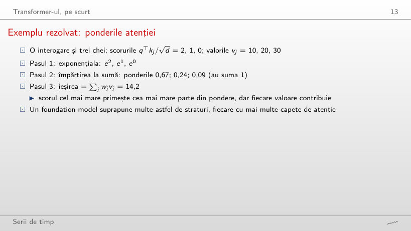
Exemplu rezolvat
Răspuns
Scade la 10,5, aproape de valoarea primei chei (10): ponderea ei crește la 95%. Cu c = 0 toate ponderile sînt 1/3 și ieșirea este media, 20; împărțirea la √d ține scorurile moderate, astfel încît și celelalte poziții contribuie.
De la numere la tokeni
Exemplu rezolvat: scalarea și tokenii
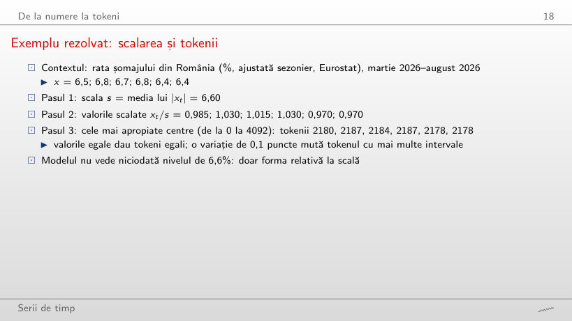
Exemplu rezolvat
Răspuns
Unul singur: intervalele au lățimea 1,5, iar toate valorile scalate (de la 0,970 la 1,030) cad în același interval. Cu 4093 de intervale (lățimea 0,0073) sînt 4 tokeni; o variație de 0,1 puncte a ratei mută valoarea scalată cu 2,07 intervale.
Scalarea și cuantizarea pe date reale
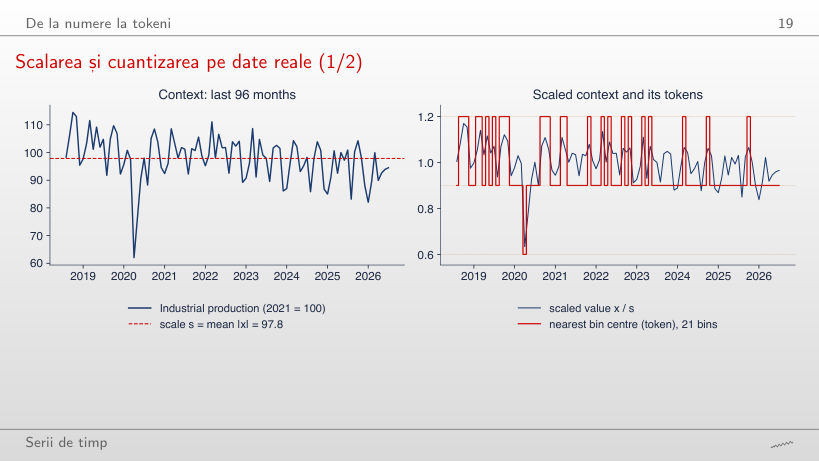
Răspuns
Doi (față de trei pentru 96 de luni): fără aprilie 2020, valorile scalate rămîn între 0,87 și 1,11, adică în două intervale de lățime 0,30. Scala se adaptează contextului (s = 94,1 în loc de 97,8), deci tokenii descriu forma relativă la nivelul recent, nu nivelul.
Patching-ul consumului de energie electrică al României
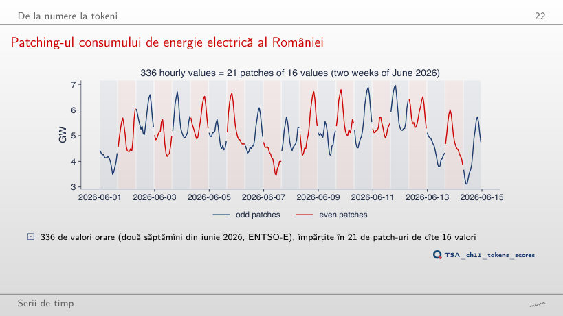
Răspuns
7 = 168/24, față de 11 pentru P = 16 (168/16 = 10,5, rotunjit în sus). Cu P = 24 patch-urile se aliniază cu ciclul zilnic, iar cele 336 de ore dau 14 patch-uri; comparațiile atenției scad de la 441 la 196.
Principalele familii de modele
Comparația familiilor de modele
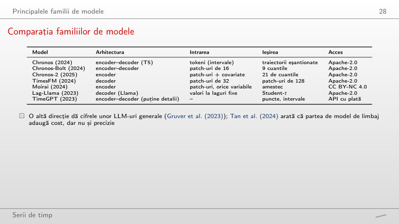
Răspuns
32 = 512/16, cu 32² = 1024 de comparații într-un strat de atenție, față de 512² = 262 144 pentru un token pe valoare (Chronos). TimesFM, cu patch-uri de 32, primește 16.
Prognozele probabiliste și scorurile lor
Pierderea cuantilă ponderată (WQL)
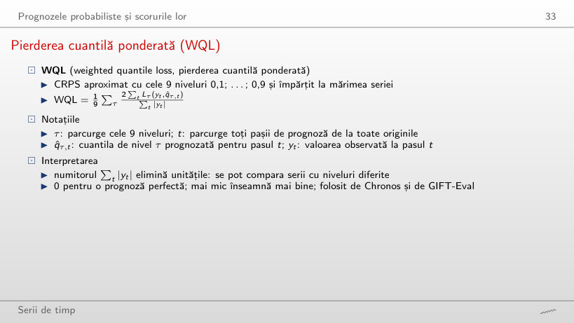
Exemplu rezolvat
Răspuns
0,87: WQL 0,0019 față de 0,0022 pentru prognoza naivă, deși raportul MASE al medianei este 1,05. WQL evaluează toate cuantilele, iar benzile mai înguste ale Chronos-2 cîștigă chiar cînd mediana nu este mai bună.
Pierderea pinball și CRPS
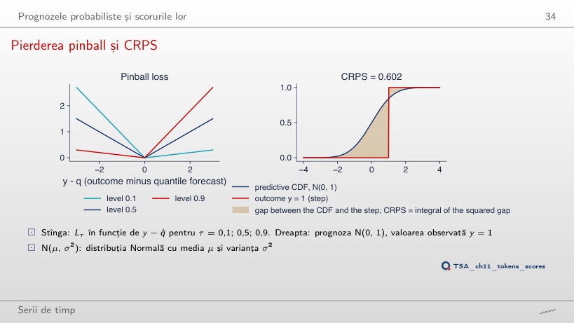
Răspuns
0,234, nu 0: CRPS evaluează toată distribuția, iar o prognoză cu abaterea standard 1 rămîne incertă chiar dacă mediana nimerește valoarea. Doar o prognoză care pune toată masa în y are CRPS 0; în y = 1 scorul este 0,602.
Exemplu rezolvat: pierderile pinball
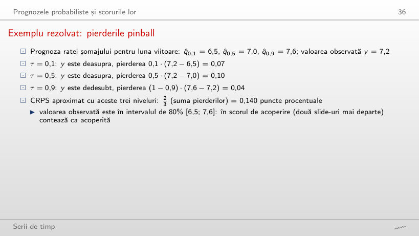
Exemplu rezolvat
Răspuns
Nivelul 0,5: 0,5·(8,0 − 7,0) = 0,50, față de 0,9·(8,0 − 7,6) = 0,36 și 0,1·(8,0 − 6,5) = 0,15. Depășirea cuantilei de 0,9 costă mult pe unitate, dar distanța pînă la ea este mică; CRPS aproximat crește la 0,673.
Precizia punctuală: MASE
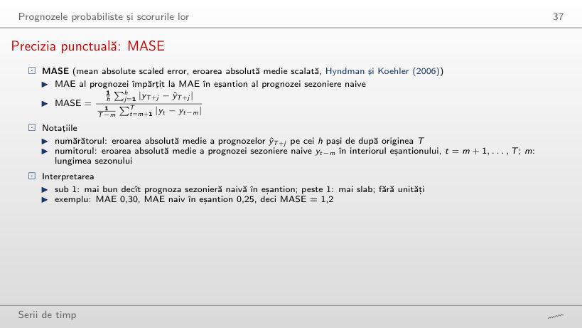
Exemplu rezolvat
Răspuns
2,13 (1,31 cu m = 168): numitorul scade de la 0,421 GW la 0,260 GW, eroarea medie a prognozei de o oră în context, iar prognozele rămîn aceleași. Valoarea MASE și pragul 1 au sens doar împreună cu m-ul declarat.
Acoperirea și scorurile relative
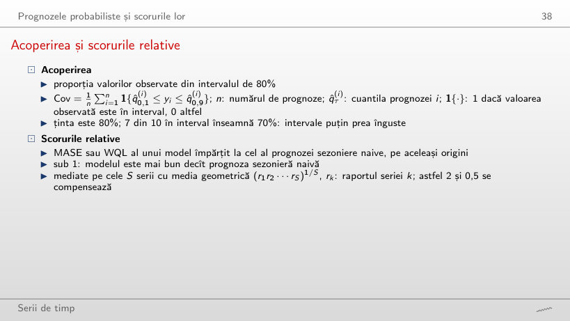
Exemplu rezolvat
Răspuns
75,2%, cea mai mare dintre cele șase modele, dar tot sub 80%; Chronos-2 are 65,0%, prognoza sezonieră naivă 64,7%. Șocul din 2020 și saltul din 2021 ies din benzile tuturor modelelor.
Prognoze zero-shot pe date reale
Șapte serii pentru test
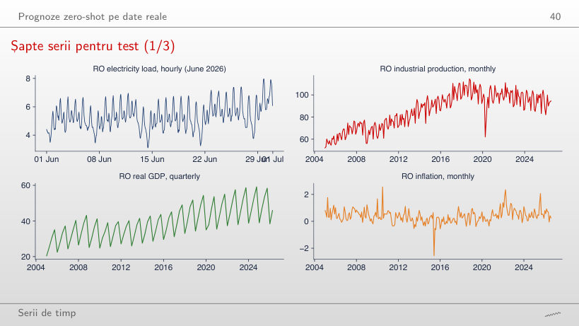
Răspuns
Mai mare: 0,43 GW față de 0,24 GW. Consumul variază puțin de la o oră la alta, iar într-o săptămînă se schimbă vremea și nivelul; de aceea numitorul MASE cu m = 168 este mai mare decît eroarea prognozei de o oră. La producția industrială este invers (4,86 cu m = 12, 6,37 cu m = 1), pentru că sezonalitatea anuală domină.
Consumul de energie electrică al României, prognoză pe 48 de ore
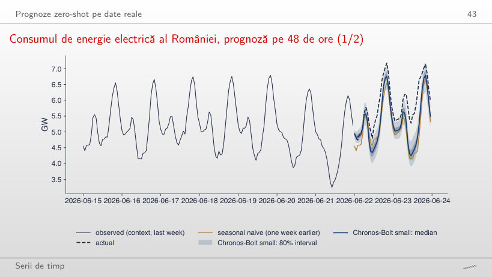
Răspuns
100% (6 din 6 ore), față de 29% pe 48 de ore; MASE este 0,11 în primele 6 ore. Prognoza pornește de la ultimele valori observate, iar abaterea consumului efectiv se acumulează în cursul zilei: acoperirea unei singure origini depinde mult de orizont.
Exemplu rezolvat: evaluarea unei ore
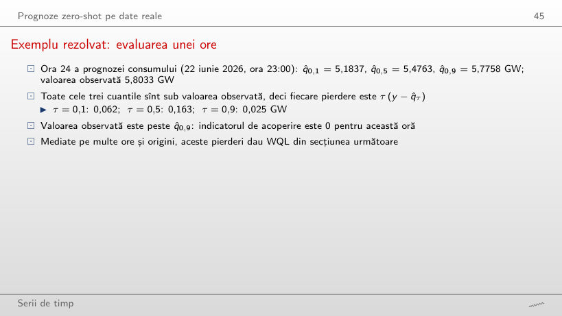
Exemplu rezolvat
Răspuns
1: valoarea observată este în banda de 80%, iar pierderile sînt mici (0,017; 0,010; 0,012 GW). Prognoza pornește de la ultimele valori; abia în cursul zilei consumul efectiv iese peste bandă, ca la ora 24 (0,062; 0,163; 0,025 GW).
Producția industrială a României, prognoză pe 12 luni
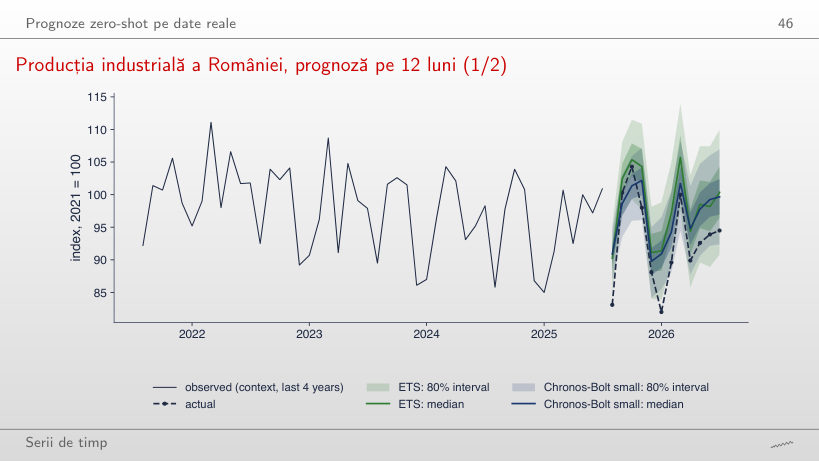
Răspuns
Prognoza sezonieră naivă: 0,43, față de 0,79 pentru ETS și 0,95 pentru Chronos-Bolt. Pentru această origine, anul precedent prognozează cel mai bine lunile următoare; pe 12 luni prognoza naivă rămîne prima (0,67), iar ETS (1,20) și Chronos-Bolt (1,04) își schimbă locurile.
EUR/RON, prognoză pe 20 de zile
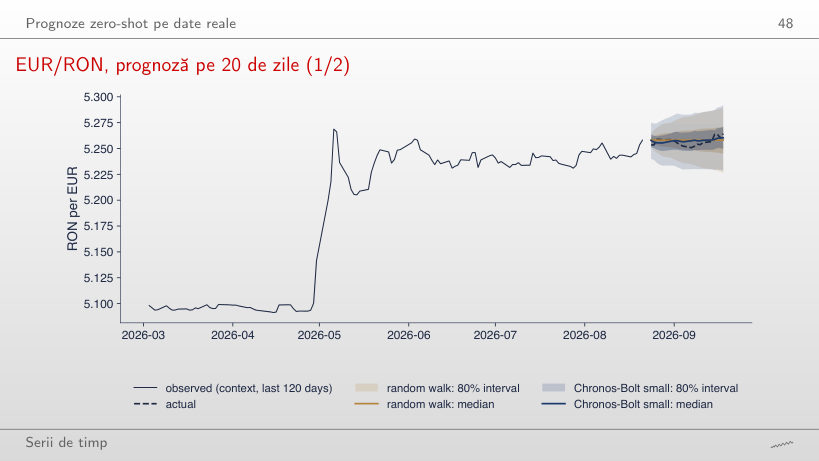
Răspuns
Mai largă: 0,044 față de 0,031. Banda mersului aleator crește cu √h, de la 0,014 în prima zi, în timp ce banda Chronos-Bolt pornește de la 0,035; cele două ajung aproape egale abia la 20 de zile (0,064 și 0,063).
O evaluare corectă
Rezultate: WQL relativ la prognoza sezonieră naivă
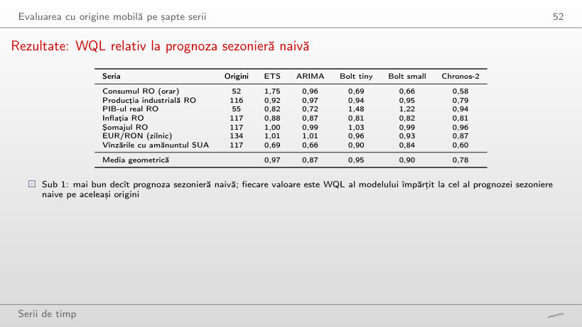
Răspuns
EUR/RON: 1,05, deși raportul WQL este 0,87. Pe celelalte șase serii raportul MASE al Chronos-2 este sub 1, de la 0,59 (vînzările din SUA) pînă la 0,98 (șomajul).
MASE și WQL pe serii și modele
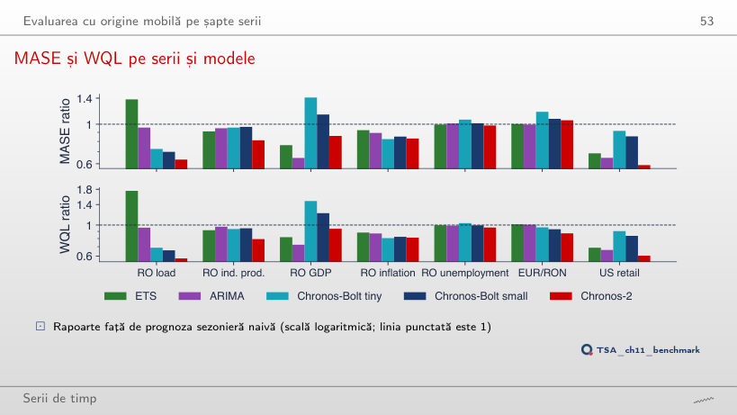
Răspuns
Tot Chronos-2 (0,78), urmat de ARIMA (0,92); Chronos-Bolt small trece la 1,06, mai slab decît prognoza sezonieră naivă, iar ETS la 1,01. Cu 175 de origini în loc de 708, ordinea celorlalte modele se schimbă: un singur clasament nu descrie toate perioadele.
Acoperirea intervalelor de 80%
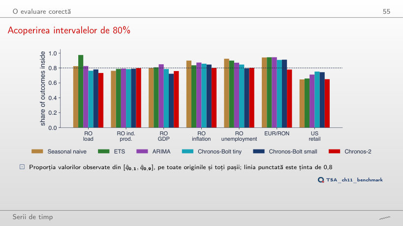
Răspuns
94%: intervalele naive devin prea largi, pentru că abaterea lor standard este estimată pe tot contextul, care include șocurile din 2020–2022. Chronos-2 ajunge la 83%: acoperirea depinde de perioada testată, nu doar de model.
Consumul României: eroarea în funcție de orizont
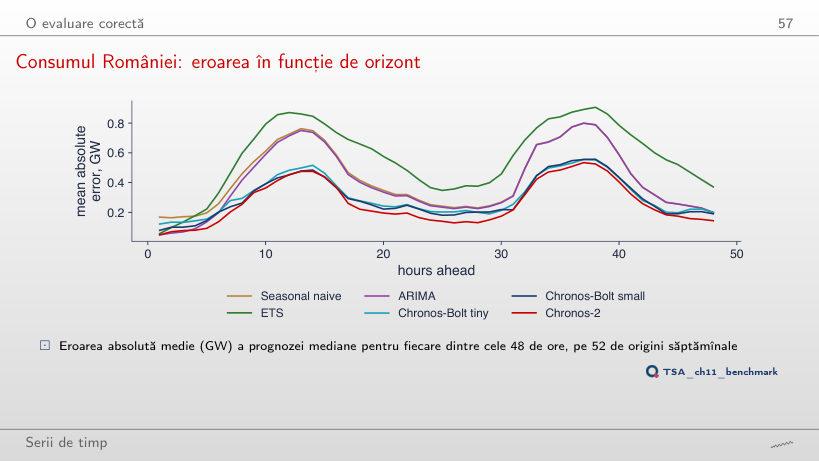
Răspuns
De la ora 41, față de ora 4 pe toate originile. În a doua jumătate erorile tuturor modelelor sînt mai mari (prognoza naivă 0,32 GW la ora 24, față de 0,19 în prima jumătate), iar Chronos-2 rămîne la 0,15 GW.
Lungimea necesară a contextului
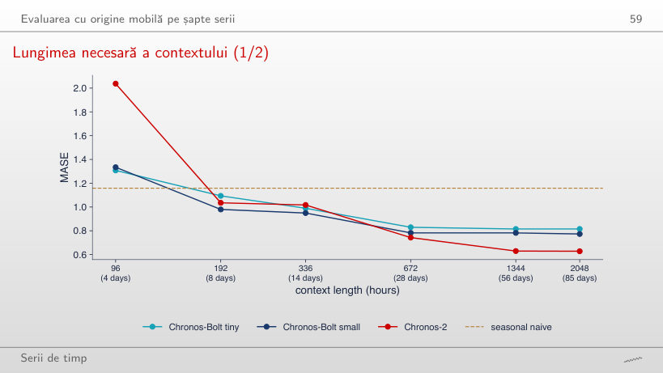
Răspuns
Toate trei: Chronos-Bolt tiny 1,09, Chronos-Bolt small 0,98, Chronos-2 1,04. Cu 96 de ore niciunul nu reușea; contextul de 8 zile conține primul ciclu săptămînal complet. Chronos-2, cel mai bun cu 2048 de ore (0,63), este aici abia al doilea: el are nevoie de cel mai lung context.
Dimensiunea și precizia
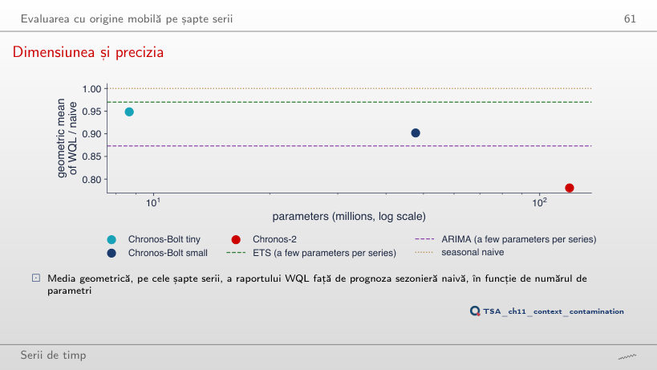
Răspuns
Nu: media geometrică a raportului WQL devine 1,04 (0,90 pe toate originile), în timp ce Chronos-2 rămîne la 0,83 și ARIMA la 0,91. Numărul de parametri nu garantează un cîștig; Chronos-2 diferă și prin arhitectură și date de antrenare.
Leakage-ul și contaminarea
O verificare a contaminării: înainte și după lansare
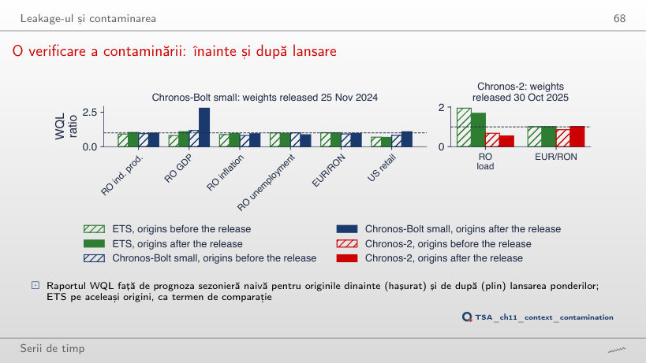
Răspuns
1,08, ca după lansarea reală (0,81 înainte): saltul apare și la o dată la care nu s-a întîmplat nimic. Diferența dintre perioade, nu neapărat contaminarea, poate produce un astfel de salt; de aceea o scădere este un semnal de alarmă, nu o dovadă.
Rezultatele backtestului (Quantlets/Ch_11: ch11_backtest.csv, ch11_abs_err.json, ch11_numbers.json): MASE, părțile WQL, acoperirea intervalului de 80% și eroarea absolută a medianei la fiecare pas, pentru fiecare origine și fiecare model; reproduc exact cifrele din curs. Cuantilele zero-shot ale Chronos-Bolt small din cele trei fan charts (nivelurile 0,1; 0,3; 0,5; 0,7; 0,9) sînt citite din graficele vectoriale ale slide-urilor (charts/tsa_ch11_fan_load.pdf, tsa_ch11_fan_ip.pdf, tsa_ch11_fan_eurron.pdf), în care fiecare pas al prognozei este un vîrf al benzii și al medianei; reproduc cifrele din curs pînă la a cincea cifră semnificativă. Seriile, citite cu funcțiile capitolului pe 4 noiembrie 2026 și tăiate la ultima perioadă din slide-uri: consumul orar al României (extrasul ENTSO-E din Capitolul 4), inflația și rata șomajului (Eurostat), cursul EUR/RON (BNR) nu au fost revizuite și reproduc exact cifrele din curs. Producția industrială (Eurostat sts_inpr_m): valoarea din iulie 2026 a fost revizuită după realizarea slide-urilor (94,5 în slide, 94,6 cu datele din 4 noiembrie 2026); cele 96 de luni ale graficului tokenilor și cele 60 de luni ale fan chart-ului sînt citite din graficele slide-urilor (fiecare lună este un vîrf al liniei). PIB-ul real al României (Eurostat namq_10_gdp) a fost revizuit: graficul seriilor folosește linia din charts/tsa_ch11_series.pdf (toate trimestrele 2005–2026). Vînzările cu amănuntul din SUA (FRED RSXFSN): iulie și august 2026 au fost revizuite; graficul folosește datele din 4 noiembrie 2026, iar valorile din slide sînt date alături. Variantele care nu apar în curs (alte origini, alte orizonturi, alt context, altă dată de tăiere, alt sezon m, alte intervale de cuantizare) sînt rulări suplimentare ale codului capitolului pe rezultatele salvate; graficele din „Comparația familiilor de modele”, „Pierderea cuantilă ponderată (WQL)”, „Acoperirea și scorurile relative”, „Precizia punctuală: MASE” și „Rezultate: WQL relativ la prognoza sezonieră naivă” sînt grafice suplimentare pentru slide-uri care dau doar cifre.